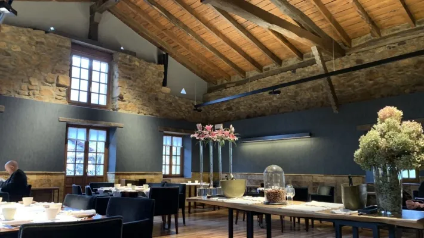
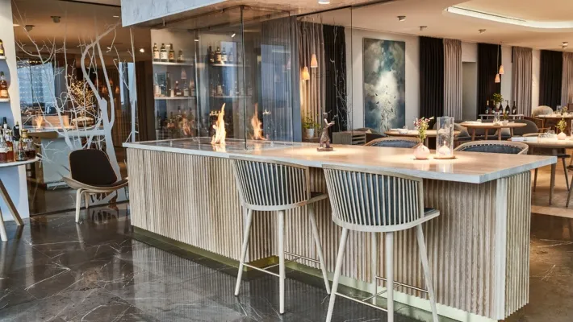

Mirazur
Mirazur Noma
Noma Mugaritz
Mugaritz Inicio
Inicio
-Este restaurante se encuentra en el país de Perú y está especializado en la comida peruana. El chef de este gran restaurante es el chef Virgilio Martínez Véliz y este restaurante es el número 50 de los Mejores restaurantes del mundo por Restaurant Magazine en 2013.
Los clásicos sabores peruanos se reinventan en este restaurante que constantemente cambia su menú y lo adapta a los sabores locales e ingredientes que emergen de la tierra por estación.
Central Restaurante es un restaurante peruano ubicado en el distrito de Barranco (Lima). Central Restaurante es el restaurante principal del chef peruano Virgilio Martínez Véliz y sirve como su taller en la investigación y la integración de insumos indígenas peruanos en la carta de comida del restaurante.
El restaurante es conocido por su interpretación contemporánea y presentación de la cocina peruana.1 En los años 2014 al 2016 y en 2021, fue clasificado como el mejor restaurante de Latinoamérica en la lista The World's 50 Best Restaurants.
| Mirazur |
Noma |
Asador Etxebarri |
| Geranium | Mugaritz |
Inicio |